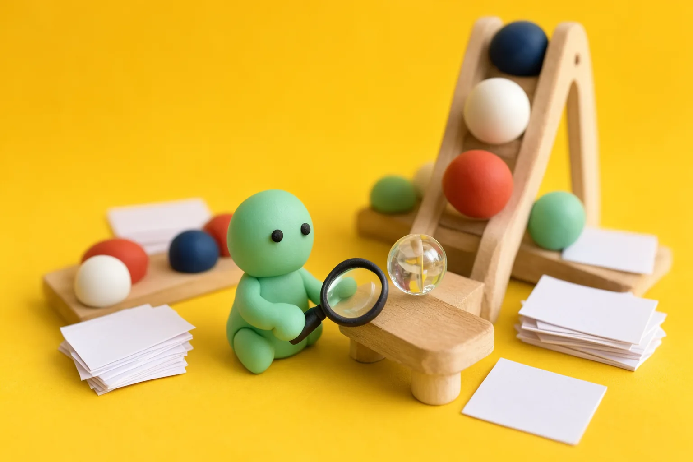
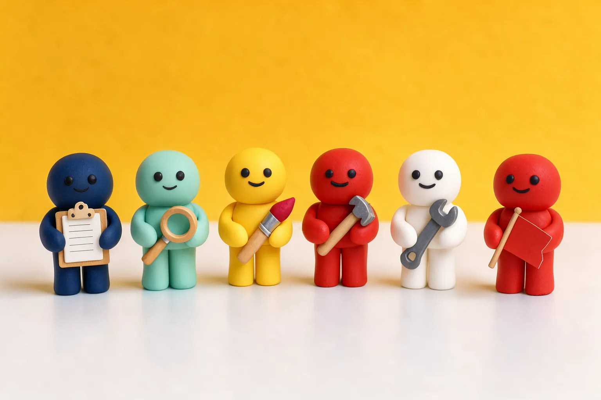
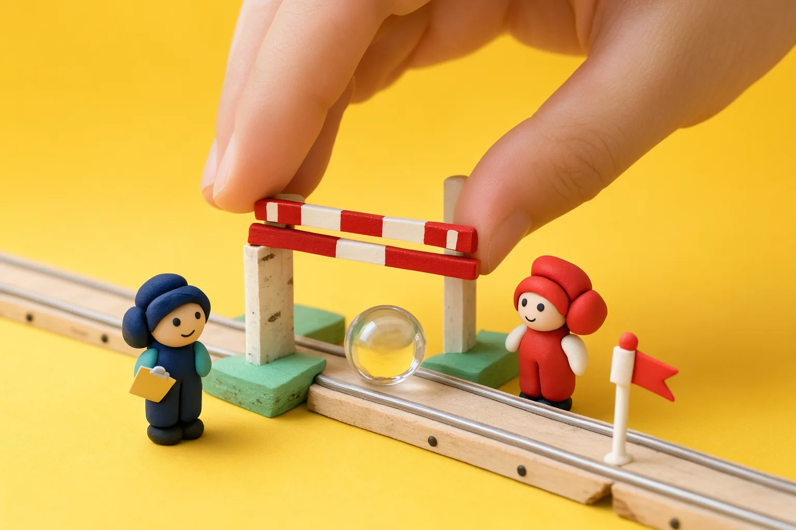
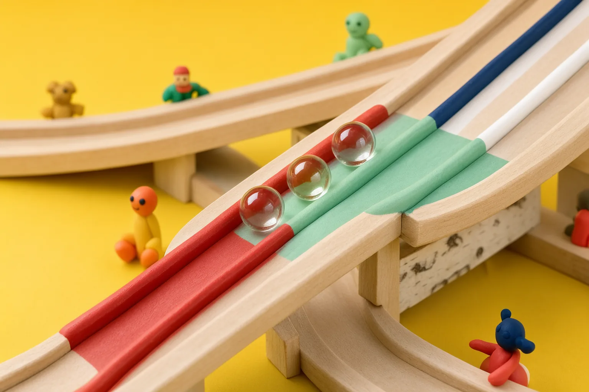

We dropped one sentence in at the top. Watch where it rolls.
Set up the website building team from BOOTSTRAP.md.
Paste it into your coding agent. That thread becomes your project manager, builds the team and asks what website you want.

Colour
A yellow wall, navy outlines, white tickets for reading. Tomato is for barriers and big shapes.
navy on it 9.80
navy on it 15.47
text, outlines
shapes, large text
on white 6.03
navy on it 6.78
navy on it 11.40
track · decorative
Type
Bricolage Grotesque, slightly condensed, for the loud bits. Atkinson Hyperlegible Next for everything you read.
Buttons
A station
Discover Research
The mint figure read eight sites, wrote three personas and pinned twenty references before anything was drawn.
research/SUMMARY.md

A gate
Gate 2: creative direction
The marble waits at the barrier until a human decides. Agents are clay; the hand that lifts it is yours.
Decision (tile placeholder): direction C. On the site, set from DECISIONS.md.
The set piece, sketched
The run is the double diamond: lanes split and funnel, twice, with four level crossings. The marble follows the track as you scroll.
Run it without humans
The explaining device: take the barriers away and see what you lose.
Four barriers in place. The marble stops at each one until someone decides.
Plates


